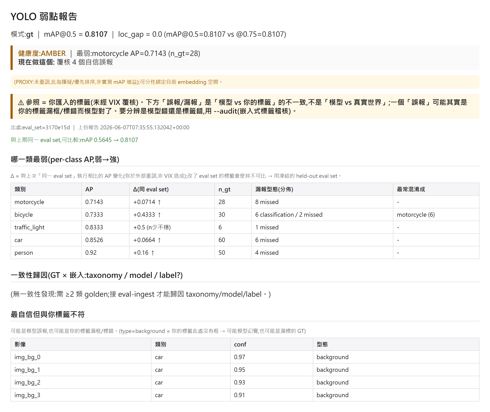

VIX:給第一次使用的 CV 工程師
yolo val 給你 mAP;VIX 告訴你「該修什麼」—— 離線、一行指令、不用重訓。
這份文件給第一次使用 VIX 的電腦視覺工程師。照著讀、照著貼上指令,十分鐘內就能對「你自己的模型 + 你自己的資料」產出一份「該修什麼」的報告。Tier A = 離線、免 FiftyOne/DINOv2Tier B = 需 DINOv2 / FiftyOne App
VIX 是什麼?
yolo val 會告訴你 mAP=0.72,但不會告訴你:哪一類最弱、為什麼弱(漏報?混淆?框太鬆?)、該先看哪些圖。
VIX 把單一個 mAP 變成一張可行動的待辦清單 —— 離線、一行指令、不用重訓、不用架服務。
5 分鐘上手(最短路徑)
前提:你有 (1) 一個影像資料夾、(2) 對應的標籤(YOLO
labels/*.txt / Pascal VOC annotations/*.xml / COCO instances.json)、(3) 你訓練好的模型 best.pt。沒有 FiftyOne、沒有 GPU 也能跑(Tier A)。# 安裝核心(任何機器都能跑 Tier A)
git clone <repo> && cd VIX
pip install -e .
# 要實際跑模型才需要(若你已有 yolo val 環境就略過):
pip install ultralytics
# 一行:匯入你的標籤 + 跑你的模型 → 弱點報告
vix diagnose ./dataset --labels yolo --weights best.pt --data-yaml data.yamldata.yaml 就是你訓練時用的那個(內含 names: 類名)。沒有的話,改用 --names car,person,bike 直接給類名(類別是數字 0/1/2 時必填其一)。報告會寫到目前目錄下自動建立的
vix_workspace/weakness_report.html(可用 --out 改路徑)。VIX 只讀不寫你的影像與標籤,不會就地改動你的資料。終端會印出像這樣的摘要,並寫出一份可瀏覽的 HTML 報告:
匯入 133 影像 / 412 框 / 1 類(參照=未覆核標籤)
Tier A 模型評估:mAP@0.5=0.7234 loc_gap=0.04 per-class AP={'pothole': 0.7234}
健康度:AMBER ｜ 最弱:pothole AP=0.72 (n_gt=412)
→ 覆核 12 個自信誤報
報告:vix_workspace/weakness_report.md(同名 .html 可瀏覽)
下一步(閉環):這是本輪基準… 凍結這個 eval set…這份報告長什麼樣?

vix diagnose 報告(多類別範例)。最上方是健康度與「現在做這個」,接著是 per-class AP(弱→強)、與上次同一 eval set 的 Δ、混淆、最自信卻錯的影像。點圖看「讀懂報告」。接下來看哪裡
安裝核心(Tier A)與 Tier-2(App/DINOv2)兩條路
診斷你的模型 ★on-ramp 的完整說明與選項
讀懂弱點報告每個欄位的意思 + 誠實 hedge
修了有沒有幫助?用凍結 eval set 看 per-class Δ
稽核標籤本身用 DINOv2 嵌入找疑似標錯
在 App 裡覆核FiftyOne 視覺化點選工作流
一句話誠實聲明:你匯入的標籤是「未覆核的參照」,不是真理。報告裡的「誤報」有可能其實是你的標籤漏框而模型是對的。詳見 誠實邊界。